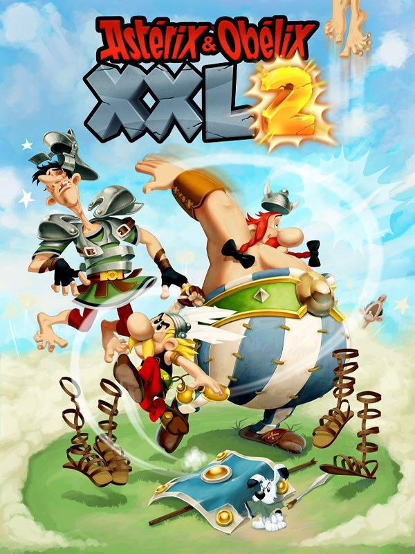

Asterix & Obelix XXL 2
Asterix & Obelix XXL 2
Detalhes
|  | |
| Tempo de jogo | 4m 0s |
| Última Atividade | 04/12/2021 11:01:27 |
| Adicionado | 11/02/2025 13:17:42 |
| Modificado | 11/02/2025 13:32:49 |
| Status de Conclusão | Jogado |
| Biblioteca | Steam |
| Fonte | Steam |
| Plataforma | PC (Windows) |
| Data de Lançamento | 29/11/2018 |
| Pontuação da Comunidade | 60 |
| Avaliação da crítica | 50 |
| Pontuação do Usuário | |
| Gênero | Adventure Fighting Platform |
| Desenvolvedor | OSome Studio |
| Editor | Microids |
| Funções | Single Player |
| Links | Steam GOG Twitch |
| Tag | |
Descrição
Por Tutatis! Os irredutíveis gauleses estão de volta num jogo de vídeo!
Mais de 10 anos após terem aparecido pela última vez em consola de sala e computador, Astérix e Obélix voltam mais em forma do que nunca! Astérix & Obélix XXL 2 é uma sábia mistura de ação e aventura para todas as idades onde o humor e as lutas são uma combinação segura.
Mas para onde foi o Panoramix? O druida de barba comprida desapareceu após ter traído os seus em nome de Júlio César! Pânico geral na aldeia gaulesa! Eles têm de descobrir a verdade! Astérix e Obélix, sempre prontos para a batalha, são enviados pelo chefe Matasétix em missão a Roma. No local, um novo parque de atrações, o Las Vegum, foi construído pelo célebre imperador romano. Com que objetivo? O que esconde Panoramix?
Aventura-te no Las Vegum com os inseparáveis Astérix e Obélix, sem esquecer o fiel companheiro Ideiafix que será uma grande ajuda para enfrentar os exércitos de legionários romanos. Não será o teu único aliado pois a imbatível poção mágica continua a ser o teu primeiro recurso contra os romanos!
Alterna entre o astuto Astérix e a prodigiosa força do Obélix para te livrares das hordas de romanos, resolveres enigmas e enfrentares as várias provas que esperam por ti!
Descobre o imponente parque de atrações de Las Vegum, um local totalmente inédito para a franquia! Os nossos dois valentões vão ter que evoluir neste universo cheio de cores e rico em pormenores que se insere fielmente no universo da banda desenhada icónica de Goscinny e Uderzo.
Incarnar o Astérix e o Obélix é uma verdadeira experiência digna de um regresso ao ano 50 antes de Cristo!
Quer sejas fã dos nossos gauleses há muito tempo ou estejas a descobrir agora as suas aventuras, Astérix & Obélix XXL 2 é um jogo acessível e particularmente agradável de percorrer. Poderás também divertir-te a descobrir várias referências. As personagens encontradas e os ambientes não vão deixar-te indiferente!
Os jogadores experientes poderão partir à procura de bónus especiais e descobrirão um novo modo de dificuldade.
Astérix & Obélix XXL 2 é a experiência suprema proposta pelo jogo inicial. Os novos grafismos dignificam a banda desenhada e o gameplay foi totalmente reajustado de modo a aperfeiçoar as lutas contra os romanos! Surge também um novo sistema para melhorares os teus ataques, bem como a possibilidade de te lançares em desafios especiais!
Mais de 10 anos após terem aparecido pela última vez em consola de sala e computador, Astérix e Obélix voltam mais em forma do que nunca! Astérix & Obélix XXL 2 é uma sábia mistura de ação e aventura para todas as idades onde o humor e as lutas são uma combinação segura.
Mas para onde foi o Panoramix? O druida de barba comprida desapareceu após ter traído os seus em nome de Júlio César! Pânico geral na aldeia gaulesa! Eles têm de descobrir a verdade! Astérix e Obélix, sempre prontos para a batalha, são enviados pelo chefe Matasétix em missão a Roma. No local, um novo parque de atrações, o Las Vegum, foi construído pelo célebre imperador romano. Com que objetivo? O que esconde Panoramix?
Incarna O Astérix E O Obélix
Aventura-te no Las Vegum com os inseparáveis Astérix e Obélix, sem esquecer o fiel companheiro Ideiafix que será uma grande ajuda para enfrentar os exércitos de legionários romanos. Não será o teu único aliado pois a imbatível poção mágica continua a ser o teu primeiro recurso contra os romanos!
Alterna entre o astuto Astérix e a prodigiosa força do Obélix para te livrares das hordas de romanos, resolveres enigmas e enfrentares as várias provas que esperam por ti!
Uma Aventura Única E Envolvente
Descobre o imponente parque de atrações de Las Vegum, um local totalmente inédito para a franquia! Os nossos dois valentões vão ter que evoluir neste universo cheio de cores e rico em pormenores que se insere fielmente no universo da banda desenhada icónica de Goscinny e Uderzo.
Incarnar o Astérix e o Obélix é uma verdadeira experiência digna de um regresso ao ano 50 antes de Cristo!
Um Jogo Para todos
Quer sejas fã dos nossos gauleses há muito tempo ou estejas a descobrir agora as suas aventuras, Astérix & Obélix XXL 2 é um jogo acessível e particularmente agradável de percorrer. Poderás também divertir-te a descobrir várias referências. As personagens encontradas e os ambientes não vão deixar-te indiferente!
Os jogadores experientes poderão partir à procura de bónus especiais e descobrirão um novo modo de dificuldade.
Uma Versão Modernizada
Astérix & Obélix XXL 2 é a experiência suprema proposta pelo jogo inicial. Os novos grafismos dignificam a banda desenhada e o gameplay foi totalmente reajustado de modo a aperfeiçoar as lutas contra os romanos! Surge também um novo sistema para melhorares os teus ataques, bem como a possibilidade de te lançares em desafios especiais!